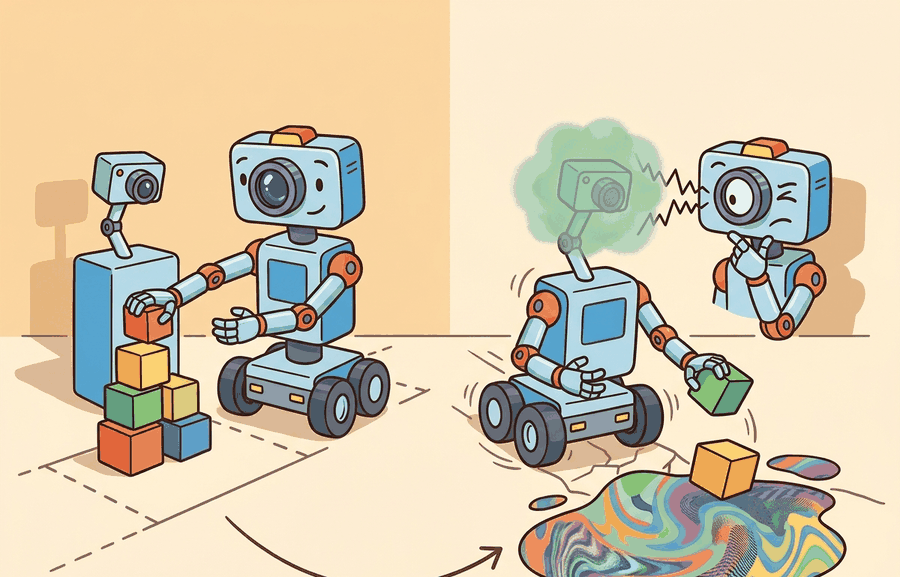

A robust robot is not the one that never sees surprise, it is the one that notices surprise early enough to act differently.
A Runtime Monitoring Engineer
A warehouse robot that docked perfectly for six months fails its first shift after the overhead lighting is replaced. The policy has not changed. The LiDAR has not changed. But the depth camera now sees spectral artifacts it never encountered in training, and the state estimator quietly accumulates error until the dock is missed by 30 cm. Deployed embodied systems fail this way constantly, and "brittleness" is too coarse a diagnosis to fix anything. Sensor corruption, timestamp drift, and environment shift each leave distinct fingerprints and demand different repairs. Here you will learn to read those fingerprints, map them to failure modes, and choose mitigations that actually match the cause.

This section assumes familiarity with sensor modalities and perception pipelines introduced in section 4.1, and with the perturbation metrics defined in section 52.4. The disturbance taxonomy developed here feeds directly into section 53.2 (calibration) and section 53.3 (out-of-distribution detection), which provide the corrective tools for each failure class identified below.
Why This Matters
Ask a robotics team why their robot failed and you will usually hear one word, "robustness", as if a single dial had slipped; but that one word hides at least four physically distinct culprits, and reaching for the wrong one can cost weeks of effort that fixes nothing. The work in this section is useful only when it distinguishes disturbance sources and ties them to specific corrective actions. Robustness is not one scalar, it is a map from perturbation class to degraded behavior, detection delay, and residual risk.
A simple disturbance decomposition is $$y_t = h(x_t) + \epsilon_t, \qquad x_t \sim p_{train}(x) \;\text{or}\; p_{deploy}(x),$$ where $\epsilon_t$ captures observation corruption and the change from $p_{train}$ to $p_{deploy}$ captures distribution shift. Different corrective actions target these two terms. Figure 53.1.2 traces each term to its physical origin and its distinct repair path, separating noise, occlusion, latency, and full distribution shift into the failure classes this section diagnoses.
For an embodied robot, misidentifying which term is causing a failure has direct physical cost. A grasping arm that treats distribution shift as sensor noise will receive a sensor-denoising patch that does nothing; if the arm then commits to a trajectory under that false confidence, the resulting collision can damage the gripper, the object, or a nearby worker. Physical systems cannot simply retry: a fall, a missed weld, or a misplaced surgical instrument is irreversible in a way that a mispredicted label in a benchmark is not.
Mechanically, $\epsilon_t$ originates inside the sensor hardware: photon shot noise on a camera, thermal drift in an inertial measurement unit (IMU) gyroscope, or multipath reflections on a LiDAR. These corruptions are independent across timesteps and follow the sensor noise and uncertainty models that let hardware diagnostic channels be compared to the signal itself. The shift term, by contrast, originates in the world: a new surface material changes the true $h(x_t)$ mapping, so even a perfect sensor would return an observation outside the training support. Keeping the two mechanisms separate gives each a distinct detection signal and a distinct fix.
Think of a chef who trained every recipe using table salt from one supplier. Sensor noise is like a faulty scale that occasionally reads 5 g too high: the salt itself is the same, the measuring instrument is misbehaving, and you fix it by recalibrating or replacing the scale. Distribution shift is like the supplier switching to a coarser sea salt with a completely different grain density: a perfectly accurate scale will now read the correct weight, but that weight no longer maps to the seasoning intensity the recipe expects. Replacing the scale solves nothing, because the input ingredient has fundamentally changed. The two problems look identical from the outside (the dish tastes wrong) but require entirely different repairs.
If the disturbance source is mislabeled, the mitigation often makes the system worse. You do not fix missing depth frames with more policy regularization, and you do not fix unseen object classes with a timestamp smoother.
A policy that survives every simulated disturbance but collapses on its first real deployment has not been tested for robustness; it has been tested for simulator fidelity, the reality gap question, which is different and far narrower.
- Label perturbations by channel: observation corruption, state-estimation drift, action delay, or environment shift.
- Measure outcome degradation under each channel separately before composing them.
- Record whether the first visible symptom appears in perception, state estimation, planning, or control.
- Attach each failure to a replay artifact with the disturbance label in metadata.
- Choose mitigations after the disturbance label is stable across multiple episodes.
Worked Example
To see this labeling procedure produce different verdicts from identical symptoms, follow one robot through three perturbations that all look like the same docking failure.
A mobile robot that misses docking targets under motion blur needs either sensor robustness or slower approach speeds. The same failure under dropped timestamps points toward synchronization, not representation learning.
disturbances = [
{"label": "motion_blur", "success": 0, "state_error_cm": 4.2},
{"label": "depth_dropout", "success": 0, "state_error_cm": 13.9},
{"label": "novel_texture", "success": 1, "state_error_cm": 6.4},
]
summary = {}
for row in disturbances:
summary[row["label"]] = {
"success": row["success"],
"state_error_cm": row["state_error_cm"],
}
print(summary){'motion_blur': {'success': 0, 'state_error_cm': 4.2}, 'depth_dropout': {'success': 0, 'state_error_cm': 13.9}, 'novel_texture': {'success': 1, 'state_error_cm': 6.4}}Expected output: The output shows that two failures share task failure but not the same internal signature. The depth-dropout episode has a far larger state error, which points toward a different repair path.
Step-Through: replay-falsification channel diagnosis
Trace the diagnostic on the depth_dropout failure above (success = 0, state_error = 13.9 cm). Step 1, timing check: the first anomaly fires at step 3 of a 200-step episode, so the early-onset rule weakly suggests a sensor or timing channel. Step 2, hardware correlation: the /diagnostics dropout rate reads 0.41 during the window versus a 0.02 baseline, a 20x spike that reinforces the sensor hypothesis. Step 3, replay falsification: re-run the recorded episode with synthetic perfect depth frames substituted. The robot now docks (success = 1, state_error = 3.1 cm). Step 4, verdict: because the task recovered under clean sensors, the root cause is the observation channel, not the environment. Contrast with novel_texture (success = 1 already, dropout rate 0.02): its replay also succeeds, but the live run never failed, so no repair is triggered. The numbers route depth_dropout to a sensor-synchronization fix and leave the policy untouched.
To build a repeatable perturbation panel, wrap the policy's observation in a Gymnasium ObservationWrapper that injects each channel separately (Gaussian jitter for camera noise, frame masking for depth dropout, texture swaps in the simulator), and tap the robot's ROS 2 /diagnostics topic to log hardware health alongside each rollout. This pairing lets the replay-falsification test run automatically: re-feed the recorded episode with the wrapper disabled and compare the docking outcome against the live run.
Concrete stack anchors for this chapter include Albumentations or custom disturbance wrappers for controlled perturbations, Torchmetrics and scikit-learn for calibration analysis, MAPIE or related conformal wrappers for thresholding, PyOD-style OOD baselines for score comparison, and Prometheus or OpenTelemetry for deployment-time health traces.
Once the tooling can replay an episode and toggle each channel on demand, the payoff depends entirely on how the resulting failures are labeled. Embodied robustness work improves when failure categories are causal rather than cosmetic. Label the disturbance by what physically changed, not only by how the image looked or whether the policy failed.
If every shifted scene lands in the same failure bucket, how would you ever know which fix to apply first? The most common mistake is to aggregate all shifted scenes into one bucket, a trap called the undifferentiated-shift fallacy. That hides whether the problem is sensor corruption, timing, morphology mismatch, or a new semantic object class.
A practical detection heuristic separates the two channels by timing and correlation. Sensor noise and timing failures appear early in an episode, usually within the first few timesteps, and they correlate with hardware metrics such as dropout rate and jitter. Distribution shift accumulates across the episode and correlates with feature-space distance from training data. To confirm which channel is active, replay the failure episode with artificially perfect sensor data. If the task succeeds under clean sensors, the root cause is in the observation channel. If the task still fails, the problem is in the environment or task distribution. In a 200-step docking episode, sensor-noise failures typically surface their first anomaly within the first several steps; distribution-shift failures may not cross the same threshold until much later (these figures are order-of-magnitude illustrations, not benchmarks; actual timing depends on episode structure and noise magnitude). The engineering cost of this mislabeling is not abstract: one team reported spending three weeks hardening their IMU filter before a single replay-falsification rollout revealed the real cause was an unseen floor texture, a one-hour fix. Chasing the wrong channel can consume weeks of engineering before that gap becomes obvious.
When diagnosing whether a failure is sensor noise or distribution shift, run the failure episode through your simulator with synthetic perfect sensor data substituted for the recorded observations. If the task succeeds under clean sensors, the root cause is in the observation channel and tools like ROS 2's /diagnostics topic or Gymnasium's ObservationWrapper are the right intervention points. If the task still fails under clean sensors, the mismatch is in the environment or task distribution, which requires feature-space distance metrics (such as Maximum Mean Discrepancy against training embeddings) rather than sensor-health monitoring. This replay-falsification step takes one extra rollout but eliminates the most common mislabeling mistake before any mitigation is designed.
Calling everything "distribution shift" is the robotics equivalent of a doctor writing "patient feels bad" and closing the chart: technically accurate, operationally useless, and quietly offensive to anyone who has to fix it.
Project Ideas
Beginner (weekend): Build a Gymnasium CartPole wrapper that injects configurable observation noise (Gaussian jitter on pole angle) and logs whether each episode failure correlates with noise spikes or drift in the underlying state. The key challenge is separating noise-induced failures from policy failures using only the observation stream, without access to ground-truth state.
Intermediate (1-2 weeks): In MuJoCo or PyBullet, train a reaching policy under nominal lighting, then systematically inject domain shifts one channel at a time: joint-encoder noise, RGB sensor gain drift, and unseen object textures. Record a labeled disturbance-vs-outcome matrix for each channel and build a simple classifier that predicts disturbance type from episode diagnostics. The key challenge is designing channel injection so each perturbation is physically plausible and independent, making the resulting diagnostic matrix causally interpretable rather than confounded.
Advanced (2-4 weeks): Deploy a ROS2 mobile robot (physical or simulated in Isaac Lab) and implement a runtime monitor on the /diagnostics topic that distinguishes sensor-noise failures from distribution-shift failures in real time using the replay-falsification heuristic: substitute clean synthetic depth frames mid-episode and check whether the task trajectory recovers. The key challenge is performing the substitution fast enough that the robot can use the diagnosis to trigger the correct fallback behavior before the failure becomes irreversible.
Cross-References
This section ties back to Section 52.4 on perturbation metrics and leads to Section 53.2 on calibration and Section 53.3 on out-of-distribution (OOD) detection.
Create a disturbance panel with at least three channels, such as motion blur, missing depth frames, and unseen textures. For each failed rollout, record which channel was active and which internal variable drifted first.
A common assumption is that any unexpected perception failure is fundamentally a sensor noise problem, and that gathering more training data or switching to a higher-resolution sensor will fix it. In embodied AI this is wrong: when the environment itself has shifted (new lighting, novel materials, unseen object geometry), even a perfect sensor will return observations outside the training support, so sensor-quality improvements provide no benefit. The correct mental model treats noise and distribution shift as separate causal channels requiring separate diagnostics: noise lives inside the sensor pipeline and correlates with hardware health metrics, while shift lives in the world and correlates with feature-space distance from training data. Applying a sensor-quality fix to a distribution-shift failure does nothing and can delay the real repair by weeks.
Do not call a disturbance distribution shift if it is really a logging or synchronization bug. Robustness experiments become misleading when infrastructure failures are mislabeled as model limitations.
For autonomous driving, rain may degrade perception while route closure introduces semantic shift. For drones, wind gusts act through dynamics while glare acts through sensing. The diagnostic matrix should reflect that distinction.
Consider a specific case: Waymo's operational-design-domain documentation distinguishes rain-induced LiDAR point-cloud sparsity (a sensing disturbance) from novel intersection geometry (a semantic shift). The two failure types trigger distinct fallbacks: reduced approach speed for sensing failures and escalation to a remote operator for semantic-shift failures. Collapsing both into generic "distribution shift" removes the principled criterion for choosing between these two very different recovery strategies.
Real-World Application: warehouse logistics
Amazon Robotics runtime stacks separate fiducial-marker read failures (a sensing channel, handled by re-imaging the tag or slowing the approach) from inventory-pod layout changes (a distribution-shift channel, handled by re-mapping the floor), routing each to a different recovery path. Collapsing both into one "perception failed" alarm would send a recalibration crew to fix a problem that only a map update can solve, which is exactly the mislabeling this section warns against.
Three active research directions (2024-2026):
1. Test-time adaptation under continuous distribution shift. Rather than retraining after deployment, recent work trains policies that adapt their internal normalization statistics on the fly as the environment drifts. The TENT framework has been extended to embodied action sequences in works such as "Continual Test-Time Adaptation for Robotic Manipulation" (Ke et al., CoRL 2024, CMU Robotics), showing that entropy minimization on incoming observations can recover up to 30% of degraded success rate under unseen lighting and texture shift without any labeled data. The key open question is when to reset the adapter, because naive continual adaptation accumulates errors when the shift is non-stationary.
2. Foundation-model-grounded OOD detection. Vision-language models are being repurposed as zero-shot novelty detectors: the semantic embedding distance between a robot's current camera frame and its training-distribution captions provides a shift signal that generalizes across morphologies. Robots at Google DeepMind (RT-2 follow-on work, 2024) have used CLIP-based scene descriptors to flag distribution shift at deployment time before any task failure occurs, reducing catastrophic grasps in novel kitchens by identifying unfamiliar object categories in the scene. This direction is computationally cheaper than running a full uncertainty ensemble but is sensitive to the choice of caption vocabulary.
3. Causal perturbation benchmarks tied to physical failure modes. The RoboCAS benchmark (Zheng et al., ICRA 2025, ETH Zurich) provides a structured suite where each perturbation (sensor dropout, texture shift, lighting change, kinematic noise) is linked to a causal graph node, so evaluation reports which causal factor drove each failure rather than collapsing all failures into a single robustness number. This moves evaluation from aggregate metrics toward actionable diagnostic matrices.
Open problem for a PhD student: All three directions above treat each deployment episode as drawing from a single shifted distribution. In practice, a robot operating in a public space encounters a mixture of shift processes simultaneously (lighting changes continuously, new object classes appear episodically, sensor degradation accumulates monotonically). A rigorous problem is to design an online algorithm that decomposes an observed failure signal into contributions from each concurrent shift process in real time, using only onboard observations and without a separate labeled validation set. No current method handles this mixed-shift decomposition reliably.
Can you name one perturbation that primarily affects sensing and one that primarily affects dynamics? If not, the disturbance taxonomy is still too flat.
Robustness work begins with disturbance taxonomy. Different failure channels deserve different measurements and different fixes.
Take a recent embodied failure from your own work and relabel it by disturbance channel. Then propose one experiment that would falsify your diagnosis.
Section References
Kendall, A., and Gal, Y. "What Uncertainties Do We Need in Bayesian Deep Learning for Computer Vision?" (2017). https://arxiv.org/abs/1703.04977
Useful background for how disturbance channels interact with uncertainty types.
Official ROS 2 diagnostics documentation.
Practical support for surfacing sensor-health and timing signals at runtime.
Section 53.2 asks how the robot should represent uncertainty once the disturbance source has been identified.